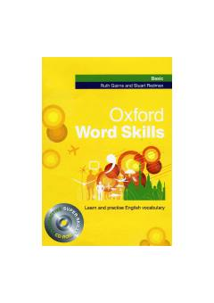

OWIngliz tilini o'rganuvchilar uchun asosiy lug'at boyligini oshiruvchi amaliy qo'llanma.
Ushbu kitob ingliz tilini endi o'rganayotganlar uchun mo'ljallangan asosiy lug'at boyligini rivojlantirish qo'llanmasidir. Unda kundalik hayotda kerak bo'ladigan so'zlar, iboralar va ularni amaliyotda qo'llash bo'yicha mashqlar jamlangan.